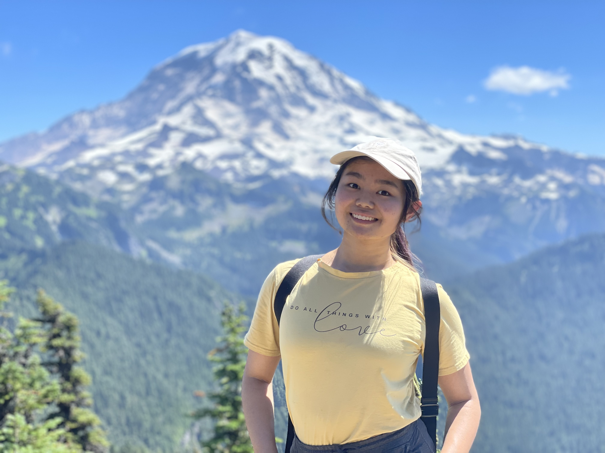

Claire Huang software + graphic design
Hello!
I'm Claire Huang, and I love to tell stories.
Whether it's through a website like this one; through my hobbies of digital art, music/songwriting, writing; or through creating natural language processing models for chatbots, I'm always drawn to the challenge of bottling emotions or experiences. Through my various work with volunteering in underprivileged communities and mental health awareness, I've had the privilege of helping others tell their stories as well.
I currently study at University of California, Los Angeles, where I'm fortunate enough to be among extremely talented and wonderful peers and faculty. My goal is to continue tackling communication problems with machine learning and natural language processing, so if you have anything exciting, just let me know!

MY WORK
Undergraduate Researcher
Professor CJ Kim,
Micro and Nano Manufacturing Laboratory
November 2021 - Present
Studied deep learning approaches to automate measuring the contact angle measurements for water droplets.
Expanded the range of measurable angles for water droplets to allow for more quick, accessible measurements.
Software Designer
Implementation of Computation Group, UPenn
June 2020 - September 2020
Accelerated a C version of the Krusell-Smith method, a stochastic economic simulation, with Upenn's Implementation of Computation Group.
Developed a logarithmic search and table lookup method that sped up runtime by 36%.
Implemented DFT that automated testing.
Projects
Redbubble
Here's a link to my shop!
Graphic Design Portfolio
I taught myself graphic design as a sophomore in high school, and making this portfolio was a great way for me to show myself how far I've come!

Club Activities
Currently, I'm active in ACM and IEEE at UCLA, and I do graphic design for both clubs! The largest project is IDEAHacks, an annual hardware-based hackathon.